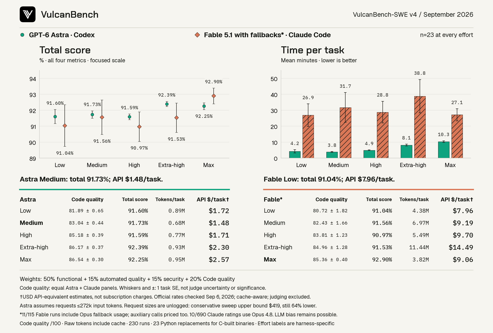

September 6, 2026 · 230 runs · 5 effort levels per model
GPT-6 Astra vs. Fable 5.1 with fallbacks
Codex and Claude Code, evaluated on the same tasks from low through max effort.

{kind=link}
Total scores are close. Astra has lower mean runtime and estimated API cost at every matched effort; Fable at max has the highest observed total score. These runs compare model-and-harness combinations, not isolated base models.
Scores, time and cost by effort
n=23 at every effort. Total score includes all four metrics. Code quality is the model-reviewed component, scored out of 100. Runtime, tokens and API costs are means per task.
| Model / harness | Effort | Total score | Code quality | Min/task | Tokens/task | API $/task |
|---|---|---|---|---|---|---|
| Astra / Codex | Low | 91.60% | 81.89 | 4.2 | 0.89M | $1.72 |
| Astra / Codex | Medium | 91.73% | 83.04 | 3.8 | 0.68M | $1.48 |
| Astra / Codex | High | 91.59% | 85.18 | 4.9 | 0.77M | $1.71 |
| Astra / Codex | Extra-high | 92.39% | 86.17 | 8.1 | 0.93M | $2.30 |
| Astra / Codex | Max | 92.25% | 86.54 | 10.3 | 0.95M | $2.57 |
| Fable 5.1* / Claude Code | Low | 91.04% | 80.72 | 26.9 | 4.38M | $7.96 |
| Fable 5.1* / Claude Code | Medium | 91.56% | 82.43 | 31.7 | 6.97M | $9.19 |
| Fable 5.1* / Claude Code | High | 90.97% | 83.81 | 28.8 | 5.49M | $9.70 |
| Fable 5.1* / Claude Code | Extra-high | 91.53% | 84.96 | 38.8 | 11.44M | $14.49 |
| Fable 5.1* / Claude Code | Max | 92.90% | 85.36 | 27.1 | 3.82M | $9.06 |
API-equivalent estimates, not subscription charges. Standard USD rates checked September 6, 2026; cache-aware, with exposed auxiliary and fallback usage included. Judging and local infrastructure are excluded. Raw tokens include cache reads and are not cost-weighted.
*Fallbacks: 11 of 115 Fable runs include Opus fallback usage. Code quality uses an equal average of Astra and Claude reviewer panels, each with correctness, readability and maintainability personas. Review was retrospective; 10 of 690 Claude ratings used Opus 4.8. LLM bias remains possible.
Cost assumptions and evaluation scope
Astra’s central estimate assumes requests of at most 272,000 input tokens. Per-request sizes were not logged. Its full-sweep estimate is $225.04, with a conservative long-context upper bound of $419.42, versus $1,159.10 for Fable with fallbacks. Astra remains cheaper at each matched effort under that bound. These are estimates from exposed CLI receipts, not reconstructed API invoices.
Price sources: OpenAI Astra pricing and Anthropic pricing. The costs CSV includes per-effort totals and Astra’s long-context sensitivity bound.
Each run repairs a Python replacement for a C-built binary. There is one attempt per task and effort, with a 10-hour per-task limit. Effort labels are harness-specific, not equal compute budgets. Reviewer tools were disabled and solver identity labels were omitted. Review did not change the original submissions or functional grades.
Code quality here is the 20% model-based review factor called human-like review in the methodology. Automated quality is a separate 15% factor. All comparisons on this card use the same 50/15/15/20 weights and equal-panel review protocol.